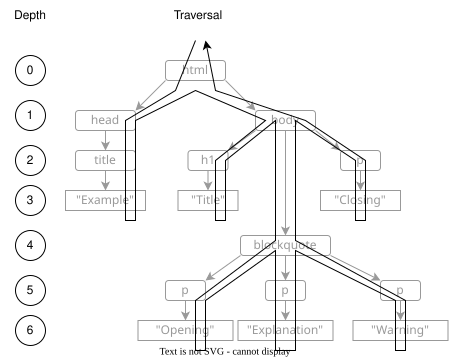

An HTML Validator
- HTML consists of text and of elements represented by tags with attributes.
- HTML is represented in memory as a Document Object Model (DOM) tree.
- Trees are usually processed using recursion.
- The Visitor design pattern is often used to perform an action for each member of a data structure.
- We can summarize and check the structure of an HTML page by visiting each node and recording what we find there.
Suppose we want to generate web pages to show the results of data analyses. We want to check that these pages all have the same structure so that people can find things in them, and that they meet accessibility standards so that everyone can find things in them. This chapter builds a small tool to do this checking, which introduces ideas we will use in building a page generator (Chapter 12) and another to check the structure and style of our code (Chapter 13).
HTML and the DOM
An HTML document is made up of elements and text.
(It can actually contain other things, but we'll ignore those for now.)
Elements are represented using tags enclosed in < and >.
An opening tag like <p> starts an element,
while a closing tag like </p> ends it.
If the element is empty,
we can use a self-closing tag like <br/>
to save some typing.
Tags must be properly nested,
i.e.,
they must be closed in the reverse of the order in which they were opened.
This rule means that things like <a><b></a></b> are not allowed;
it also means that
a document's elements form a tree of nodes and text
like the one shown in Figure 1.
This figure also shows that
opening and self-closing tags can have attributes,
which are written as key="value".
For example,
if we want to put an image in an HTML page,
we specify the image file's name using the src attribute of the img tag:
<img src="banner.png" />

The objects that represent the nodes and text in an HTML tree are called the Document Object Model or DOM. Hundreds of tools have been written to convert HTML text to DOM; our favorite is a Python module called Beautiful Soup, which can handle messy real-world documents as well as those that conform to every rule of the standard.
Beautiful Soup's DOM has two main classes:
NavigableString for text and Tag for elements.
To parse a document,
we import what we need and call BeautifulSoup with
the text to be parsed
and a string specifying exactly what kind of parsing we want to do.
(In practice, this is almost always "html.parser".)
from bs4 import BeautifulSoup, NavigableString
doc = BeautifulSoup(text, "html.parser")
display(doc)
Tag nodes have two properties name and children
to tell us what element the tag represents
and to give us access to the node's children,
i.e.,
the nodes below it in the tree.
We can therefore write a short recursive function
to show us everything in the DOM:
def display(node):
if isinstance(node, NavigableString):
print(f"string: {repr(node.string)}")
return
else:
print(f"node: {node.name}")
for child in node:
display(child)
We can test this function with a short example:
text = """<html>
<body>
<h1>Title</h1>
<p>paragraph</p>
</body>
</html>"""
node: [document]
node: html
string: '\n'
node: body
string: '\n'
node: h1
string: 'Title'
string: '\n'
node: p
string: 'paragraph'
string: '\n'
string: '\n'
In order to keep everything in one file, we have written the HTML "page" as a multiline Python string; we will do this frequently when writing unit tests so that the HTML fixture is right beside the test code. Notice in the output that the line breaks in the HTML have been turned into text nodes containing only a newline character. It's easy to forget about these when writing code that processes pages.
The last bit of the DOM that we need is its representation of attributes.
Each Tag node has a dictionary called attrs
that stores the node's attributes.
The values in this dictionary are either strings or lists of strings
depending on whether the attribute has a single value or multiple values:
def display(node):
if isinstance(node, Tag):
print(f"node: {node.name} {node.attrs}")
for child in node:
display(child)
text = """<html lang="en">
<body class="outline narrow">
<p align="left" align="right">paragraph</p>
</body>
</html>"""
node: [document] {}
node: html {'lang': 'en'}
node: body {'class': ['outline', 'narrow']}
node: p {'align': 'right'}
The Visitor Pattern
Before building an HTML validator, let's build something to tell us which elements appear inside which others in a document. Our recursive function takes two arguments: the current node and a dictionary whose keys are node names and whose values are sets containing the names of those nodes' children. Each time it encounters a node, the function adds the names of the child nodes to the appropriate set and then calls itself once for each child to collect their children:
def recurse(node, catalog):
assert isinstance(node, Tag)
if node.name not in catalog:
catalog[node.name] = set()
for child in node:
if isinstance(child, Tag):
catalog[node.name].add(child.name)
recurse(child, catalog)
return catalog
When we run our function on this page:
<html>
<head>
<title>Software Design by Example</title>
</head>
<body>
<h1>Main Title</h1>
<p>introductory paragraph</p>
<ul>
<li>first item</li>
<li>second item is <em>emphasized</em></li>
</ul>
</body>
</html>
it produces this output (which we print in sorted order to make things easier to find):
body: h1, p, ul
em:
h1:
head: title
html: body, head
li: em
p:
title:
ul: li
At this point we have written several recursive functions that have almost exactly the same control flow. A good rule of software design is that if we have built something three times, we should make what we've learned reusable so that we never have to write it again. In this case, we will rewrite our code to use the Visitor design pattern.
A visitor is a class that knows how to get to each element of a data structure and call a user-defined method when it gets there. Our visitor will have three methods: one that it calls when it first encounters a node, one that it calls when it is finished with that node, and one that it calls for text (Figure 2):
class Visitor:
def visit(self, node):
if isinstance(node, NavigableString):
self._text(node)
elif isinstance(node, Tag):
self._tag_enter(node)
for child in node:
self.visit(child)
self._tag_exit(node)
def _tag_enter(self, node): pass
def _tag_exit(self, node): pass
def _text(self, node): pass
We provide do-nothing implementations of the three action methods
rather than having them raise a NotImplementedError
because a particular use of our Visitor class may not need some of these methods.
For example,
our catalog builder didn't need to do anything when leaving a node or for text nodes,
and we shouldn't require people to implement things they don't need.

Here's what our catalog builder looks like
when re-implemented on top of our Visitor class:
class Catalog(Visitor):
def __init__(self):
super().__init__()
self.catalog = {}
def _tag_enter(self, node):
if node.name not in self.catalog:
self.catalog[node.name] = set()
for child in node:
if isinstance(child, Tag):
self.catalog[node.name].add(child.name)
with open(sys.argv[1], "r") as reader:
text = reader.read()
doc = BeautifulSoup(text, "html.parser")
cataloger = Catalog()
cataloger.visit(doc.html)
result = cataloger.catalog
for tag, contents in sorted(result.items()):
print(f"{tag}: {', '.join(sorted(contents))}")
It is only a few lines shorter than the original, but the more complicated the data structure is, the more helpful the Visitor pattern becomes.
Checking Style
To wrap up our style checker, let's create a manifest that specifies which types of nodes can be children of which others:
body:
- section
head:
- title
html:
- body
- head
section:
- h1
- p
- ul
ul:
- li
We've chosen to use YAML for the manifest because it's a relatively simple way to write nested rules. JSON would have worked just as well, but as we said in Chapter 5, we shouldn't invent a syntax of our own: there are already too many in the world.
Our Check class needs a constructor to set everything up
and a _tag_enter method to handle nodes:
class Check(Visitor):
def __init__(self, manifest):
self.manifest = manifest
self.problems = {}
def _tag_enter(self, node):
actual = {child.name for child in node
if isinstance(child, Tag)}
errors = actual - self.manifest.get(node.name, set())
if errors:
errors |= self.problems.get(node.name, set())
self.problems[node.name] = errors
To run this, we load a manifest and an HTML document, create a checker, ask the checker to visit each node, then print out every problematic parent-child combination it found:
def read_manifest(filename):
with open(filename, "r") as reader:
result = yaml.load(reader, Loader=yaml.FullLoader)
for key in result:
result[key] = set(result[key])
return result
manifest = read_manifest(sys.argv[1])
with open(sys.argv[2], "r") as reader:
text = reader.read()
doc = BeautifulSoup(text, "html.parser")
checker = Check(manifest)
checker.visit(doc.html)
for key, value in checker.problems.items():
print(f"{key}: {', '.join(sorted(value))}")
body: h1, p, ul
li: em
The output tells us that content is supposed to be inside a section element,
not directly inside the body,
and that we're not supposed to emphasize words in lists.
Other users' rules may be different,
but we now have the tool we need
to check that any HTML we generate conforms to our intended rules.
More importantly,
we have a general pattern for building recursive code
that we can use in upcoming chapters.
Summary
HTML is probably the most widely used data format in the world today; Figure 3 summarizes how it is represented and processed.
Exercises
Simplify the Logic
-
Trace the operation of
Check._tag_enterand convince yourself that it does the right thing. -
Rewrite it to make it easier to understand.
Detecting Empty Elements
Write a visitor that builds a list of nodes
that could be written as self-closing tags but aren't,
i.e.,
node that are written as <a></a>.
The Tag.sourceline attribute may help you
make your report more readable.
Eliminating Newlines
Write a visitor that deletes any text nodes from a document
that only contains newline characters.
Do you need to make any changes to Visitor,
or can you implement this using the class as it is?
Linearize the Tree
Write a visitor that returns a flat list containing all the nodes in a DOM tree in the order in which they would be traversed. When you are done, you should be able to write code like this:
for node in Flatten(doc.html).result():
print(node)
Reporting Accessibility Violations
-
Write a program that reads one or more HTML pages and reports images in them that do not have an
altattribute. -
Extend your program so that it also reports any
figureelements that do not contain exactly onefigcaptionelement. -
Extend your program again so that it warns about images with redundant text (i.e., images in figures whose
altattribute contains the same text as the figure's caption).
Ordering Headings
Write a program that checks the ordering of headings in a page:
-
There should be exactly one
h1element, and it should be the first heading in the page. -
Heading levels should never increase by more than 1, i.e., an
h1should only ever be followed by anh2, anh2should never be followed directly by anh4, and so on.
Report Full Path
Modify the checking tool so that it reports
the full path for style violations when it finds a problem,
e.g.,
reports 'div.div.p(meaning "a paragraph in a div in another div")
instead of justp`.